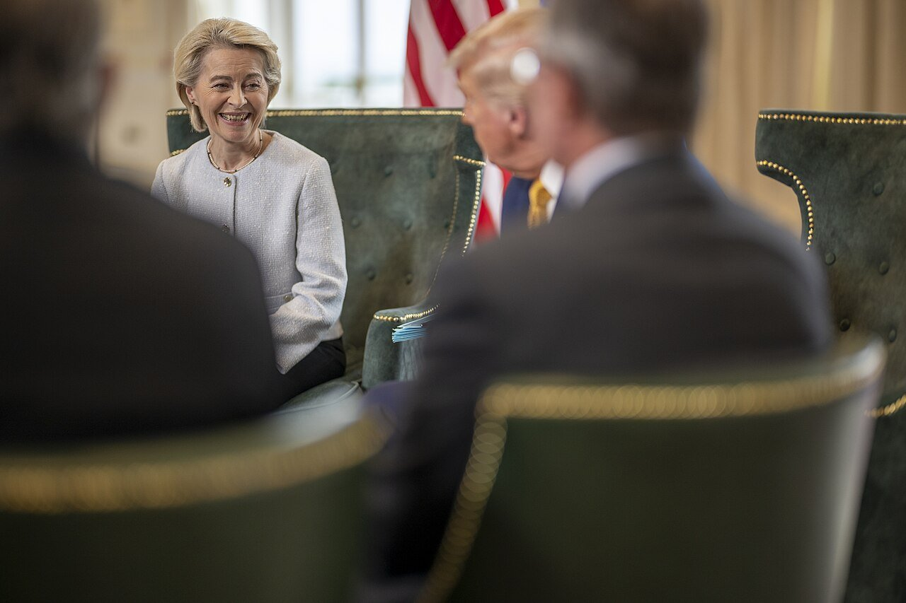
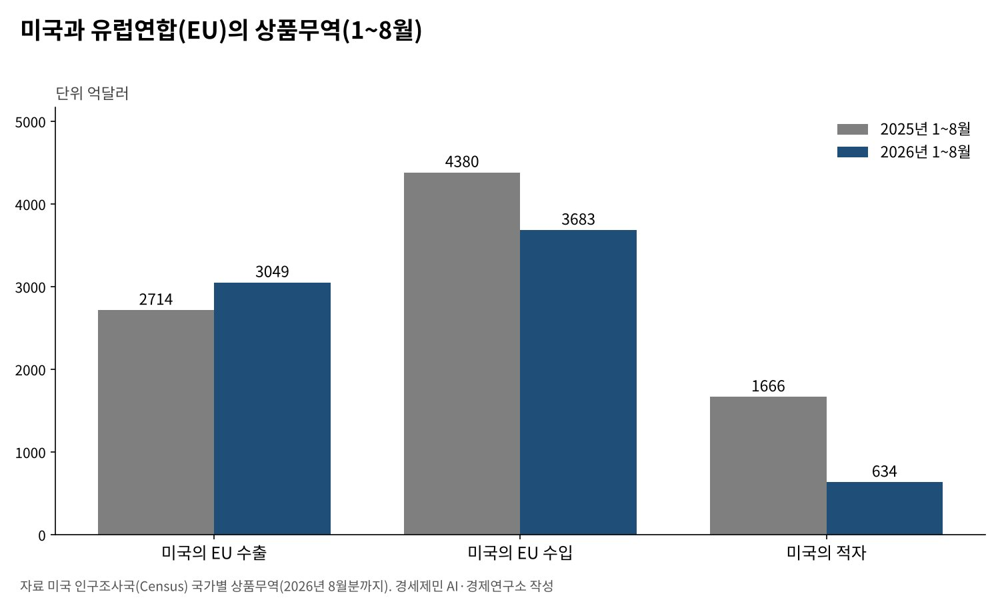
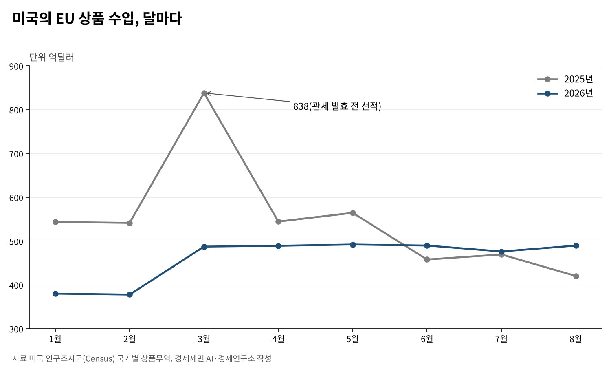

[트럼프 관세전쟁③] EU는 왜 어떻게 15%를 수용했나
2025년 8월 공동성명, 미국은 15% 상한을 주고 EU는 에너지 7500억달러·투자 6000억달러를 약속
대법원 판결 뒤 미국 관세는 기존 관세 포함 10%로 내려갔고, EU는 2026년 6월 이행 법안을 마무리
1~8월 미국의 EU 무역적자 1666억달러→634억달러, 수출은 늘고 수입은 줄었다
AI경세제민=김갑봉 기자 | 유럽연합(EU)은 2025년 7월 27일 영국 스코틀랜드 턴베리에서 미국과 15% 관세에 합의했다. 처음 목표는 서로 관세를 없애는 일이었다. 미국이 더 높은 관세로 압박하자 유럽은 15%를 차선으로 받아들였다.
1년여가 지난 지금 숫자가 바뀌었다. 미국 대법원 판결 뒤 유럽 상품에 붙는 국가별 관세는 기존 관세를 포함해 10%가 됐다. 유럽은 약속한 미국산 공산품 관세 철폐를 2026년 6월 법으로 마무리했다.
경제 규모가 미국에 버금가는 블록이 왜 15%를 받아들였는지 다시 묻는다. 합의가 어떤 문서로 굳었고 무역에 무엇을 남겼는지 미국과 유럽의 원문으로 짚는다.
공동성명에 적힌 15%의 구조
미국과 유럽연합은 2025년 8월 21일 상호무역협정 기본 틀을 담은 공동성명을 냈다. 미국은 유럽 상품에 기존 관세와 15% 가운데 높은 쪽만 매기기로 했다. 관세를 겹쳐 쌓지 않는 상한이다.

항공기와 부품, 복제약은 9월 1일부터 기존 관세만 내게 했다. 자동차 관세는 유럽연합이 관세 인하 법안을 내놓으면 15%로 내리기로 했다. 집행위원회는 8월 말 법안을 냈고 미국은 8월 1일로 거슬러 15%를 적용했다.
유럽은 미국산 공산품 관세를 없애고 일부 농수산물에 시장을 넓히기로 했다. 2028년까지 미국산 액화천연가스(LNG)·석유·원자력 제품 7500억달러어치를 사기로 했다.
인공지능 반도체도 400억달러어치 이상 산다. 유럽 기업은 6000억달러를 더 투자할 것으로 적었다.
15%를 받아들인 세 가지 까닭
첫째는 안보다. 북대서양조약기구(나토) 정상들은 2025년 6월 25일 헤이그 선언에서 2035년까지 국방·안보 지출을 국내총생산(GDP)의 5%로 늘리기로 했다. 핵심 국방비만 3.5%다. 유럽은 무역과 안보를 따로 떼어 협상하기 어려웠다.
둘째는 에너지다. 러시아 가스를 줄여야 하는 유럽은 어차피 다른 공급처가 필요했다. 미국산 에너지 구매 약속은 새로 지는 부담인 동시에 이미 가던 길이었다. 다만 7500억달러를 2028년까지 채우려면 한 해 2000억달러 넘게 사야 한다.
셋째는 27개 회원국의 셈법이다. 미국 시장에 자동차를 파는 나라, 의약품을 파는 나라, 농산물 개방을 꺼리는 나라의 이해가 달랐다. 보복관세는 회원국의 뜻을 모아야 하는데, 협상 시한 안에 그 합의를 얻기 어려웠다.
대법원 판결 뒤 15%가 10%로
2026년 2월 20일 미국 대법원은 국제비상경제권한법(IEEPA)이 관세 권한을 주지 않는다고 판결했다. 15% 상한의 법적 근거였던 상호관세가 효력을 잃었다. 2월 24일부터 7월 23일까지는 무역법 122조 관세 10%가 붙었다.
7월 24일부터는 무역법 301조 관세다. 미국 무역대표부(USTR) 관보를 보면 유럽 상품은 기존 관세와 합해 10%가 되도록 매긴다. 기존 관세가 10% 이상이면 더 붙이지 않는다. 일본·한국의 12.5%보다 낮다.
관보는 이런 상한 방식이 상호무역협정이나 비슷한 약정과 맞는다고 적었다. 미국은 법의 근거를 바꾸면서도 합의 상대에게 준 상한 구조는 이어 갔다. 자동차처럼 232조 관세가 붙은 품목은 301조 관세에서 빠졌다.
유럽의 약속은 법이 됐다
유럽 쪽 이행은 오래 걸렸다. 유럽의회는 2026년 3월 조건을 붙여 법안을 지지했고, 의회와 이사회는 5월 합의에 이르렀다. 유럽의회는 6월 16일 이행 법안을 통과시켰고 두 기관 의장이 6월 25일 서명했다.
보복은 접었다. 유럽연합은 미국산 930억유로어치에 매길 보복관세를 2025년 8월부터 미뤘다. 2026년 7월 31일에는 그 유예를 기한 없이 늘렸다. 집행위원회는 상황을 계속 지켜보겠다고 했다.
미국 관세는 15%에서 10%로 내려왔는데 유럽의 관세 철폐 약속은 그대로 법이 됐다. 법정에서 바뀐 것은 미국 관세의 근거였고, 유럽이 내준 약속은 바뀌지 않았다.

무역 통계가 보여 주는 것
미국 인구조사국 자료로 2026년 1~8월 미국의 유럽 수출은 3049억달러다. 1년 전 2714억달러보다 12.3% 늘었다. 같은 기간 유럽에서 들여온 상품은 4380억달러에서 3683억달러로 15.9% 줄었다.
미국의 상품무역 적자는 1666억달러에서 634억달러로 줄었다. 다만 비교 기준인 2025년에는 관세 발효 전 선적이 몰렸다. 2025년 3월 한 달 수입이 838억달러로 다른 달보다 300억달러 가까이 많았다.

2026년 들어 달마다 수입은 378억~492억달러에서 움직였다. 2025년 1~2월의 540억달러 수준보다 낮다. 선적 앞당김을 걷어 내도 유럽산 수입이 줄어든 흐름은 남는다. 미국 연간 적자는 2024년 2367억달러, 2025년 2203억달러였다.
한국이 읽어야 할 것
첫째, 블록도 시한 앞에서는 약하다. 유럽은 보복관세 목록을 쥐고도 시한 안에 쓰지 않았다. 안보를 미국에 기대는 한 무역에서만 맞서기 어렵다. 한국은 안보와 통상을 한 협상에 올리는 미국의 방식을 계산에 넣어야 한다.
둘째, 상한 구조가 숫자보다 오래 간다. 유럽과 일본, 한국이 얻은 기존 관세 포함 상한은 법의 근거가 바뀐 뒤에도 이어졌다. 새 과잉생산 301조 조사가 끝날 때도 이 구조가 지켜지는지가 핵심이다.
셋째, 약속의 이행은 따로 따져야 한다. 유럽의 에너지 7500억달러와 투자 6000억달러가 얼마나 이행됐는지 연구소는 공식 집계로 확인하지 못했다. 숫자가 큰 약속일수록 이행 실적을 공개하라고 요구할 근거가 된다.
유럽은 관세를 피하려고 15%를 받아들였다. 법원이 미국 관세를 10%로 낮춘 지금도 유럽의 약속은 남아 있다. 관세는 미국 법원과 의회가 바꿀 수 있지만, 상대국이 내준 시장은 쉽게 돌아오지 않는다.
참고문헌
기관 자료
- 미국 백악관, 「Joint Statement on a United States-European Union Framework on an Agreement on Reciprocal, Fair, and Balanced Trade」, 2025년 8월 21일. https://www.whitehouse.gov/fact-sheets/2025/08/joint-statement-on-a-united-states-european-union-framework-on-an-agreement-on-reciprocal-fair-and-balanced-trade/
- 미국 무역대표부(USTR), 「Notice of Actions in Section 301 Investigations … Forced Labor」, 미국 관보 91 FR 47318, 2026년 7월 28일. https://www.federalregister.gov/documents/2026/07/28/2026-15181/notice-of-actions-in-section-301-investigations-of-acts-policies-and-practices-of-various-economies
- 미국 무역대표부, 「USTR Takes Action in Forced Labor Section 301 Investigations」, 2026년 7월 23일. https://ustr.gov/about/policy-offices/press-office/press-releases/2026/july/ustr-takes-action-forced-labor-section-301-investigations
- 북대서양조약기구(NATO), 「The Hague Summit Declaration」, 2025년 6월 25일. https://www.nato.int/cps/en/natohq/official_texts_236705.htm
- 미국 인구조사국, 「Trade in Goods with European Union」(2026년 8월분까지). https://www.census.gov/foreign-trade/balance/c0003.html
연구 논문과 보고서
- KPMG, 「EU suspension of rebalancing measures against U.S. exports extended」, 2026년 7월. https://kpmg.com/us/en/taxnewsflash/news/2026/07/eu-suspension-rebalancing-measures-against-us-exports-extended.html
- Ropes & Gray, 「Supreme Court Strikes Down IEEPA Tariffs: Key Takeaways and Implications for Importers」, 2026년 2월. https://www.ropesgray.com/en/insights/alerts/2026/02/supreme-court-strikes-down-ieepa-tariffs-key-takeaways-and-implications-for-importers
- EY, 「USTR finalizes Section 301 forced labor tariffs on 60 economies」, 2026년 7월. https://taxnews.ey.com/news/2026-1607-ustr-finalizes-section-301-forced-labor-tariffs-on-60-economies-additional-tariffs-of-10-percent-or-125-percent-take-effect-24-july-2026
언론 보도
- 위키백과, 「EU–U.S. trade agreement」(유럽위원회 보도자료, 유럽의회 보도자료, 로이터·폴리티코 유럽 보도를 출처로 단 연표, 2026년 10월 21일 열람). https://en.wikipedia.org/wiki/EU-U.S._trade_agreement
- "EU Parliament Backs Turnberry Tariff Deal", International Trade Today, 2026년 6월 16일. https://internationaltradetoday.com/article/2026/06/16/eu-parliament-backs-turnberry-tariff-deal-2606160050?BC=bc_6a3204dfd8a17
- "EU to suspend 93 billion euro retaliatory trade package against US for 6 months", AJOT(로이터 전재), 2026년 1월 23일. https://www.ajot.com/news/eu-to-suspend-93-billion-euro-retaliatory-trade-package-against-us-for-6-months
- "美 301조 관세 가동…3500억달러 투자로 만든 '15%' 시험대", 아시아투데이, 2026년 7월 26일. https://www.asiatoday.co.kr/kn/view.php?key=20260726010009349
[사진 출처]
- [사진1] The White House, "Donald Trump meets with the President of the European Commission Ursula von der Leyen in Scotland, on July 27, 2025.jpg", 위키미디어 공용, 퍼블릭 도메인. https://commons.wikimedia.org/wiki/File:Donald_Trump_meets_with_the_President_of_the_European_Commission_Ursula_von_der_Leyen_in_Scotland,_on_July_27,_2025.jpg
※ 이 기사는 AI 프로그램 클로드를 활용해 작성했습니다.
관련기사
- [트럼프 관세전쟁①] 트럼프 관세압박, 미국이라고 다 유리할까
- [트럼프 관세전쟁②] 일본과 베트남은 왜 그래야만 했을까
- [트럼프 관세전쟁④] 「나머지는 15~20%」 발언과 한미 관세협상
- [트럼프 관세전쟁⑤] 한미 관세협상과 환율 방어
저작권자 © AI경세제민 무단전재 및 재배포, AI학습 및 활용 금지